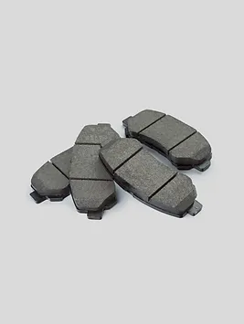

Brake Pads

Ціна: $120
Країна: Германія
Постачальник: MOTORKS
Кількість в наявності: 200
Опис:
Гальмівні колодки - це ключовий компонент гальмівної системи автомобіля, який забезпечує надійне і
ефективне гальмування. Виготовлені з високоякісних матеріалів, гальмівні колодки гарантують безпеку
і комфорт при гальмуванні на різних дорожних умовах.
Особливості:
Надійність та ефективність: Гальмівні колодки відзначаються високою ефективністю і
надійністю, забезпечуючи короткий гальмівний шлях і стабільну роботу гальмівної системи.
Мінімальний рівень шуму: Спеціальні матеріали, використані в гальмівних
колодках, забезпечують мінімальний рівень шуму під час гальмування, що забезпечує комфортну
їзду для водія і пасажирів.
Стійкість до зношування: Високоякісні матеріали забезпечують довговічність і стійкість до
зношування гальмівних колодок, що забезпечує їх ефективну роботу протягом тривалого часу.
Характеристики:
Матеріал: Спеціальні композитні матеріали
Сумісність: Підходить для різних марок і моделей автомобілів.